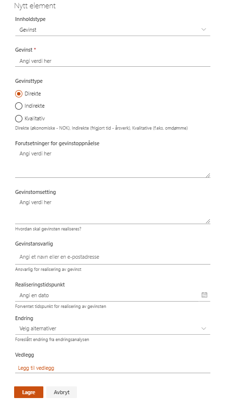

I gevinstanalyse og gevinstrealiseringsplanen føres en analyse på alle beregnede og identifiserte gevinster prosjektet skal resultere i. Disse kan knyttes til endringer som er oppført i endringsanalysen.

I likhet med endringsanalysen, er gevinstanalyse og gevinstrealiseringsplanen laget etter prinsipper fra gevinstkokeboka.
Informasjonen som legges i denne lista, eller i gevinstoppfølging, blir synlige i gevinstoversikten på porteføljenivå. Der er de tilgjengelig for alle som har tilgang til prosjektområdet.